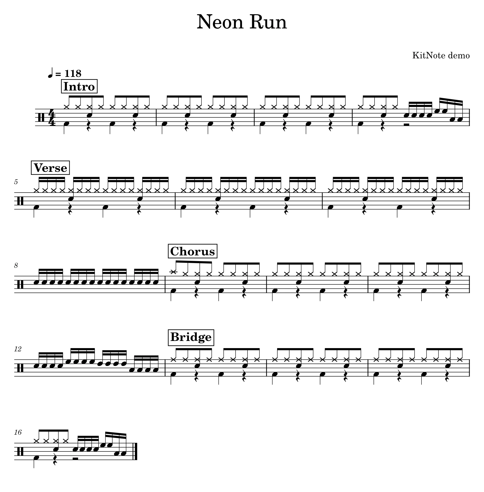

Drum notation.
Nothing else.
KitNote is a free notation editor that only knows the drum kit.
Step grid · Measure 1
Click: add or remove a stroke. Right-click: accent → ghost note → normal.
Paste the copied tab into KitNote and it becomes notation.
Pattern library
Click a card to hear it. In KitNote, the pattern is written into the measures you selected.
From a recording to a drum chart.
Drop a song on the KitNote window. It separates the drums, finds the beat and the measures, and KitNote's own drum model writes the strokes.
- Open or closed hi-hat
- Crash or ride
- Which tom
- Ghost notes
- Time signature
- Sections and % repeats
The result is a first draft to correct. The audio engine (about 1 GB) downloads only after you agree. The model learned from openly licensed data only.
Play it and the strokes land in the measures. (Demo)

Charts that look published, by default.
- Four measures to a line
- Boxed section names
- % repeats for 1, 2 and 4 measures, with counts
- Merged rests for hands and feet
- A drum key before the first measure
Export to PDF, PNG, SVG, MIDI, MusicXML, MP3 · WAV · OGG · FLAC and text tab.
Or just ask your AI.
One click in Preferences → AI connects KitNote's local MCP server. Then ask in plain words and the AI writes, edits and exports the chart.
- Claude Code
- Codex
- Claude Desktop
- Cursor
- Gemini CLI
>
Download KitNote 1.0.0
Free. No account.
-
WindowsInstaller · Windows 10/11, 64-bit · no admin rights
KitNote-1.0.0-win64-setup.exeDownload -
macOSDisk image · macOS 14.4 or later · Apple silicon and Intel
KitNote-1.0.0-macos-universal.dmgDownload -
Windows (portable)zip · unpack and run bin\KitNote.exe
KitNote-1.0.0-win64.zipDownload
Windows: not code-signed yet, so the first start shows a SmartScreen warning. Choose More info → Run anyway.
macOS: not notarized yet. If the first start is blocked, open System Settings → Privacy & Security and click Open Anyway.